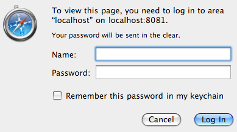

- Integration into secure application -
Most web applications start with login/password form. Once end-user is logged in, a unique identifier is associated to user's session, and he can browse the application including JFileUpload. However, JFileUpload doesn't own this session identifier and it will send anonymous requests that should fail if upload is securised.
| Maintain user's session |
| Usually, session identifier is passed by browser either in URL or as cookie. JFileUpload support both. You have to choose one depending how your application works.
- Session identifier in URLs: You have to append the identifier in all JFileUpload URLs you've setup such as "url", "post" and "forward". For instance, for JSP:
<PARAM NAME="url" VALUE="http://server.com/script.jsp;jsessionid=ABC123">
<PARAM NAME="forward" VALUE="http://server.com/page.jsp;jsessionid=ABC123">
Notice that ";" separator is specific to JSP, it could be "?" or "&" for others server-side technologies.
- Session identifier as cookie: You can setup JFileUpload to pass one or more cookies. For instance to pass a JSESSIONID=ABC123:
<PARAM NAME="param6" VALUE="cookiename">
<PARAM NAME="value6" VALUE="JSESSIONID">
<PARAM NAME="param7" VALUE="cookievalue">
<PARAM NAME="value7" VALUE="ABC123">
JFileUpload will pass the cookie within each upload request. If server-side sets a new cookie then it will be taken into account and sent within each further upload request. Some secure applications require to update the cookie value periodically, JFileUpload supports this behavior but you have to specify the cookie path (if any) to allow cookie value overwrite. For instance:
<PARAM NAME="param8" VALUE="cookiepath">
<PARAM NAME="value8" VALUE="/webapp">
You can pass more cookies with cookiename1/cookievalue1, cookiename2/cookitvalue2 and so on.
- Share cookies from browser: If you have session cookie(s) already loaded in browser then you can enable cookies sharing with applet by adding:
<PARAM NAME="param9" VALUE="cookiesource">
<PARAM NAME="value9" VALUE="jse">
When using this parameter you should not use any cookiename/cookievalue as above.
- Cookies compatibility: If you have troubles to get multiple cookies on server-side then you can force the applet to pass all cookies in one "Cookie:" HTTP header by adding:
<PARAM NAME="param10" VALUE="cookieheader">
<PARAM NAME="value10" VALUE="singleline">
Sometimes, session identifier is not enough. Some portal software require to pass a few additional HTTP parameters to maintain web flow. You can pass such parameter with:
<PARAM NAME="param9" VALUE="ORACLE_ADF">
<PARAM NAME="value9" VALUE="123">
|
| HTTP Basic authentication |
| Some web application are securised with HTTP Basic authentication instead of form. Browser displays an authentication pop-up window and credentials are passed into HTTP headers. |
 |
JFileUpload support HTTP Basic authentication too. You can either pass login/password as parameter or ask JFileUpload to prompt an authentication pop-up.
- Pass login and password: You can setup username and password parameter. JFileUpload will send credentials in each upload request:
<PARAM NAME="username" VALUE="yourlogin">
<PARAM NAME="password" VALUE="yourpassword">
Notice both username and password could be base64 encoded. To do so you have then enclose base64 value with []:
<PARAM NAME="username" VALUE="[yourbase64login]">
<PARAM NAME="password" VALUE="[yourbase64password]">
username and password could be encrypted too. To do so you have to enclosed encrypted value with {}. The encryption service is available upon request to support email.
Also, they could also be moved in i18n.properties with following properties:
username=yourlogin
password=yourpassword
- Authentication pop-up: You have to setup authentication=auto parameter. It will display a pop-up when required.
<PARAM NAME="authentication" VALUE="auto">
| Three attempts are allowed. You can mix authentication=auto with username parameter if you want to fill in login field. |
 |
|
| FTP authentication |
FTP authentication works as explained above. You can setup username/password or enable authentication pop-up.
|
| |
|